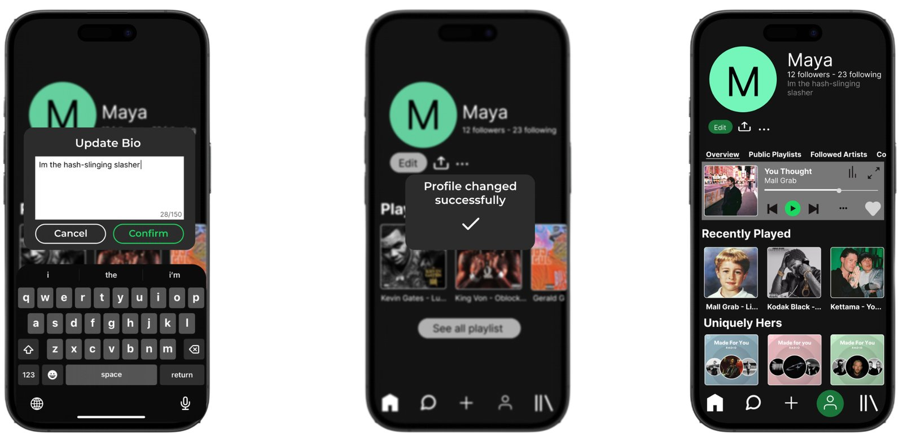

Spotify Social Redesign
Figma, information architecture, taxonomy
A concept redesign that makes Spotify's social features easier to find and use.
- Problem
- Spotify's social features are hard to find, so listeners leave the app to share music, often through Instagram.
- What I did
- I was the UX designer and taxonomist on a four-person team. I designed the wireframes, including a more customizable profile and in-app messaging where shared songs can be played or saved right from the chat. I also built the taxonomy and metadata tags that organize Spotify's content, listeners, creators, social activity, and discovery features.
- Result
- Over nine weeks, our team delivered a business case, project plan, personas, a new sitemap, the taxonomy, and wireframes for a more social Spotify.
Unofficial concept redesign for INFO 331, fall 2025. Not affiliated with Spotify.